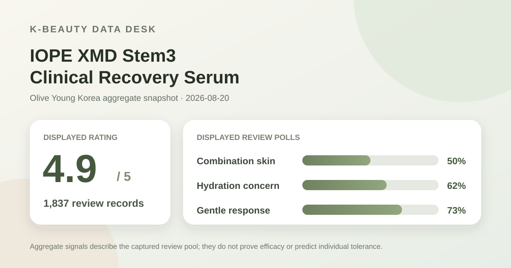
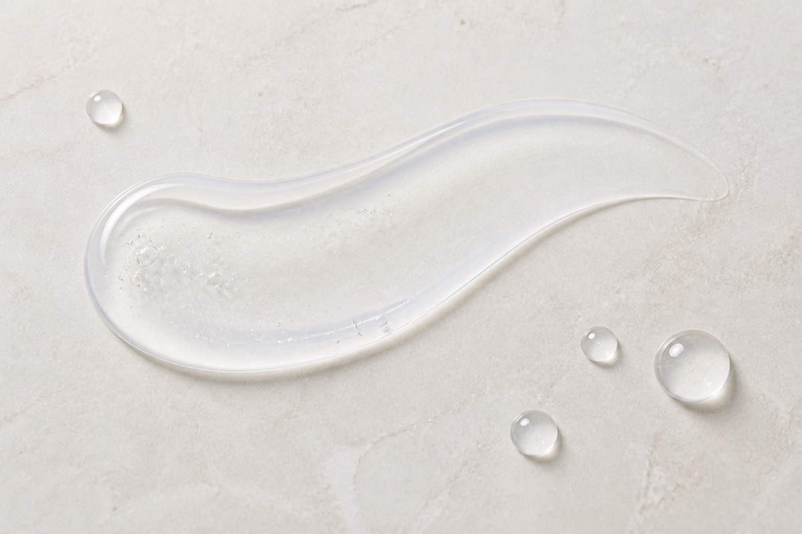

Data captured August 20, 2026. This article uses only the retailer's displayed aggregate rating, review count, polls, price, and anonymous summary themes. No individual review, reviewer name, or user photo is reproduced or translated. I did not test the product on my own skin.

The short version: the listing showed 4.9 out of 5 from 1,837 review records. Its three headline polls displayed combination skin at 50%, hydration as the leading concern response at 62%, and a gentle response at 73%. Those are useful audience and perception clues, not proof of efficacy.
A 4.9 average across 1,837 records is a strong satisfaction signal inside this retailer's review system. It tells us that the displayed scores cluster toward the positive end. It does not tell us why every reviewer scored the product that way, whether every record came from a verified buyer, or whether a reader with a different routine will have the same experience.
The distinction matters because a retail average combines many uncontrolled variables: amount applied, other products used at the same time, climate, expectations, incentives, and the point in a routine when someone decided to review. None of those variables are standardized like a study protocol. The result is shopping context, not clinical evidence.
I also did not capture a reliable five-to-one-star distribution from the current summary screen. A high average makes a positive skew likely, but estimating percentages would manufacture precision. This article therefore reports the verified average and count without assigning star shares.
Combination was the largest displayed skin-type response. This describes who is represented in that poll; it does not prove the serum works better for combination skin.
Hydration was the leading visible concern response. It identifies what respondents were looking for, not whether a measured hydration change occurred.
Most displayed responses selected the gentle option. This remains a perception poll; it cannot rule out stinging, allergy, or irritation for an individual.
These polls answer different questions and should not be merged into a single success score. Skin type describes sample representation, concern describes shopper interest, and gentleness records a subjective reaction category. Their denominators were not displayed in the captured summary, so the percentages should not be converted into reviewer counts.

The retailer's aggregate summary grouped recent positive discussion around three broad ideas: a luminous-looking finish, moisture with comfortable absorption, and an overall smoother or better-conditioned appearance that may support makeup layering. I am paraphrasing those retailer-generated aggregate themes rather than reproducing any reviewer language.
Theme labels are useful for forming questions. If you dislike visibly dewy finishes, the glow theme is a reason to examine current product directions and independent swatches before buying. If you are prioritizing hydration, the 62% concern poll and the moisture theme point in the same general direction. Neither signal tells us the magnitude, duration, or cause of an effect, and neither confirms that the formula will sit well under every sunscreen or base product.
The summary also showed 85% recent positive sentiment. This is the retailer's classification of recent review material, not the share of all 1,837 records that achieved a particular result. Automated sentiment and topic labels can miss context, sarcasm, comparison points, or mixed opinions. I treat the number as a directional metadata signal only.
At capture time, the Korea page displayed a discounted price of ₩32,900, down from ₩47,000. The captured title described a 23 ml promotional set with a 15 ml serum mini and 5 ml cream mini. Promotions, gifts, coupon eligibility, and inventory can change quickly, and the same product name may appear in another market with a different pack or formula.
For a useful value comparison, separate the core serum volume from temporary extras. Compare current cost per milliliter for the product you actually intend to use, then check shipping, tax, seller, return terms, and regional labeling. A gift set can look cheaper than a standard bottle while making the comparison less direct.
The product name and promotional page language are not a substitute for a verified, current ingredient list. I did not capture a complete list, so I do not infer fragrance status, alcohol content, active concentration, peptide dose, or suitability for pregnancy, allergy, acne, rosacea, eczema, or another condition.
Likewise, terms such as “clinical recovery,” “glow,” or “elasticity” should not be read here as medical conclusions. A product name can describe positioning; it does not establish study design, effect size, comparison group, or clinical significance. If an ingredient or condition is a safety issue for you, check the regional package and consult a qualified professional.
The captured review summary did not provide verified directions, so this article does not prescribe an amount, frequency, or routine order. Follow the instructions on the current package. If your skin is reactive, introducing one new product at a time and testing a small area can make it easier to notice a problem, but that is general caution rather than a guarantee of safety.
For evaluation, define your own question before opening the bottle: comfort, finish, compatibility with sunscreen, or whether it adds anything beyond a serum you already tolerate. A high retailer score can justify curiosity, but it does not create a need to replace a routine that already works.
Combination skin was the largest displayed skin-type response at 50%. That makes the poll more representative of combination-skin respondents than a tiny subgroup, but it does not prove better performance for that skin type.
The visible poll showed a 73% gentle response. Individual tolerance still depends on the full formula, use pattern, and skin history. The poll cannot rule out reactions.
No. It is a strong aggregate satisfaction signal from 1,837 displayed records, not a controlled outcome measure. The current summary did not expose the full rating distribution, so this analysis does not estimate it.
No. The image is an AI-generated, brand-neutral illustration of a general gel-serum format. It does not depict the actual product and is not evidence of consistency, spread, absorption, or finish.
IOPE XMD Stem3 Clinical Recovery Serum earns a place on a conditional shortlist because the live page showed a high 4.9 average across 1,837 records, while the visible polls offered useful context about combination-skin representation, hydration interest, and perceived gentleness. The evidence is strongest as retail sentiment and audience context.
It is not enough to conclude medical benefit, a guaranteed glow, or universal suitability. Check the current ingredient list, directions, pack size, and regional seller. If those details fit your needs and the price compares well on an equivalent-volume basis, the aggregate data supports investigating further—not buying on autopilot.
← All K-Beauty Data Desk reviews · Best-seller rankings · Skin-poll guide · About & methodology
Published by The K-Beauty Data Desk · Aggregate data captured 2026-08-20. The source data does not independently verify every reviewer's identity. No individual review, name, or user photo is reproduced or translated, and I did not test the product. I received no free product and am not paid or approved by the brand. Check the dated source listing.
Data basis: the live Olive Young Korea ranking and product/review screens captured 2026-08-20. The product title, rating, review count, price, poll shares, and retailer-generated aggregate themes are source facts. The interpretation and cautions are editorial.